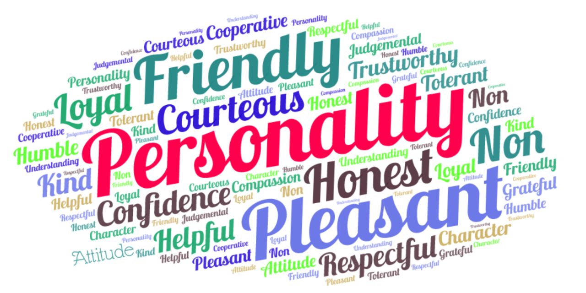

Personality
If I was to describe my personality in one word, it would be "driven". However, one word wouldn't be enough to describe me. I have a great work ethic, I'm patient, resilient and composed when it comes to putting in the work. Now obvioulsy this would sound like a brag but I'm also humble enough to admit that it wasn't easy to become the person I am. It took a lot of work to build who I am and I can say my resilience played a huge role in this. I can say with confidence that I have the perfect personality for this career. I like solving problems and this is an essential drive to succeed in this career.